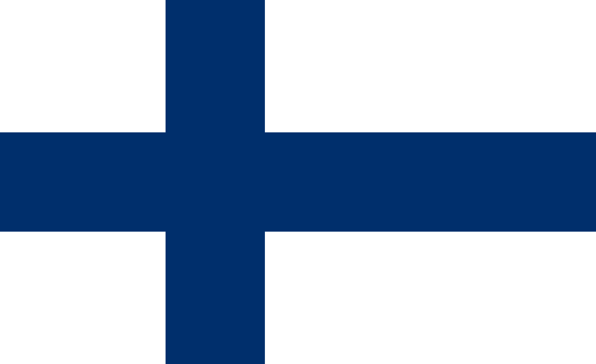
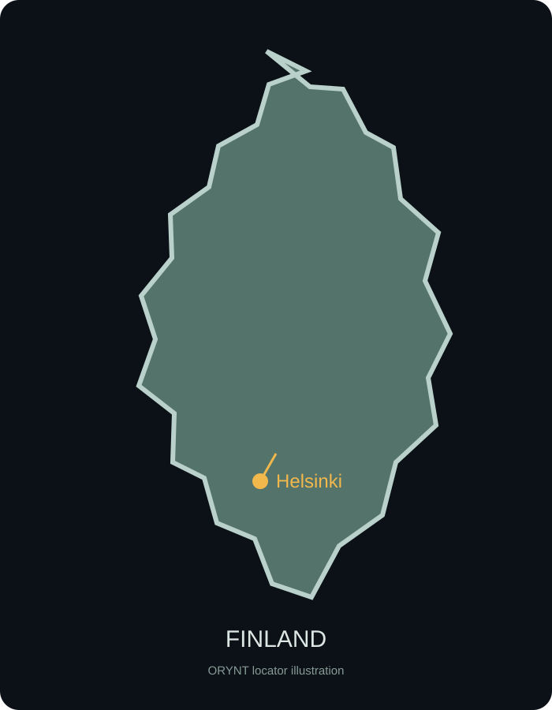

NORTHERN EUROPE
Finland
A Nordic country where nature, education, technology and public institutions meet.

Quick Facts
Flag & Map


Helsinki — The Capital
Helsinki is Finland's capital and largest city. It sits on the Baltic Sea and combines government institutions, universities, technology companies, cultural venues and a dense coastal urban environment.
How is Finland governed?
Parliamentary republic
Finland is a parliamentary democracy. Parliament is the country's supreme legislative body and oversees the Government. The Prime Minister leads the Government's work and day-to-day executive policy, while the President is the head of state with important constitutional and foreign-policy responsibilities.
Finland has a multi-party political system. Governments depend on parliamentary support, so coalition-building is an important part of national politics.
Potential strengths
- Strong public institutions and a well-developed welfare system.
- High educational attainment and a strong research and innovation ecosystem.
- Large forest resources, extensive freshwater resources and a distinctive natural environment.
- A highly digitalised society with a notable technology and startup sector.
Important challenges
- High living costs can be a burden, especially in major urban areas.
- Long, dark and cold winters can make everyday life demanding in parts of the country.
- An ageing population creates pressure on public services, labour supply and long-term finances.
- Economic growth and employment remain important policy challenges; Statistics Finland reported a 9.9% unemployment rate for July 2026.
Why Finland matters
Finland is interesting not because it is perfect, but because it offers a useful case study in how a relatively small country can combine democratic institutions, public services, education, research, technology and natural resources. Its current challenges also show that high living standards do not remove demographic or economic pressures.